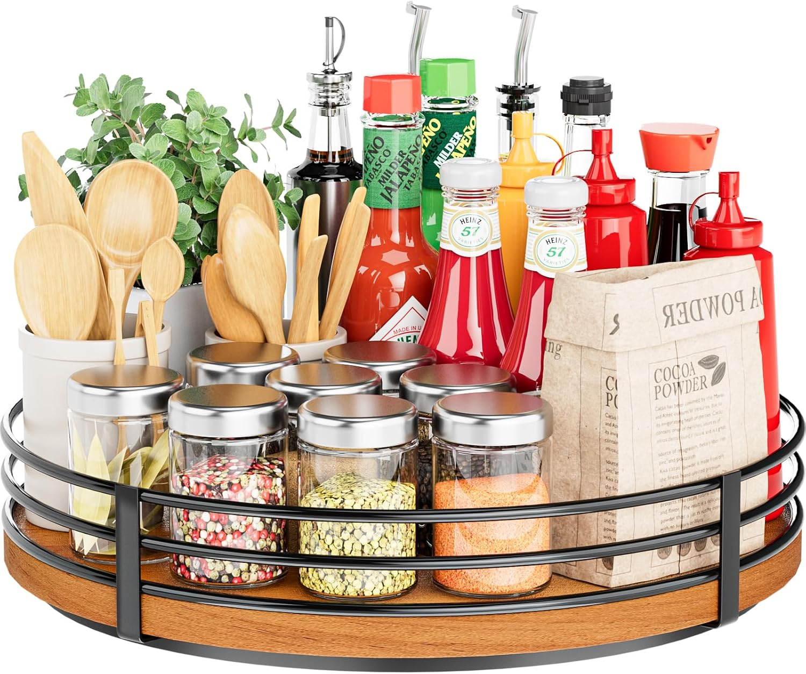

Home objects · considered living
A closer look at the Bamboo Lazy Susan Pantry Turntable

Round wood turntable for seasoning, condiments and tea. Sits on a countertop or inside a corner cabinet.
Mastering this niche requires tools that combine form and function. Many people struggle with finding high-quality solutions that fit a modern lifestyle, but this specific choice does the hard work for you.
By focusing on premium materials and subtle space-saving layouts, you can elevate your setup immediately. Here is what our editors suggest focusing on today.
Bamboo Lazy Susan Pantry Turntable
Round wood turntable for seasoning, condiments and tea. Sits on a countertop or inside a corner cabinet.
Check price on AmazonEditor rating 4.8 / 5 · about $22.99
In the room
- Yes Gorgeous minimalist design
- Yes Highly durable premium materials
- Yes Incredibly easy to clean & organize
- Note Highly requested (often sells out fast)
- Note Only available online
On paper
| Brand | CozyHome Aesthetics |
| Material | Eco-friendly Premium Matte |
| Dimensions | Standard space-saving fit |
As an Amazon Associate I earn from qualifying purchases. Prices and stock change. This page is an independent studio note, not an Amazon listing.